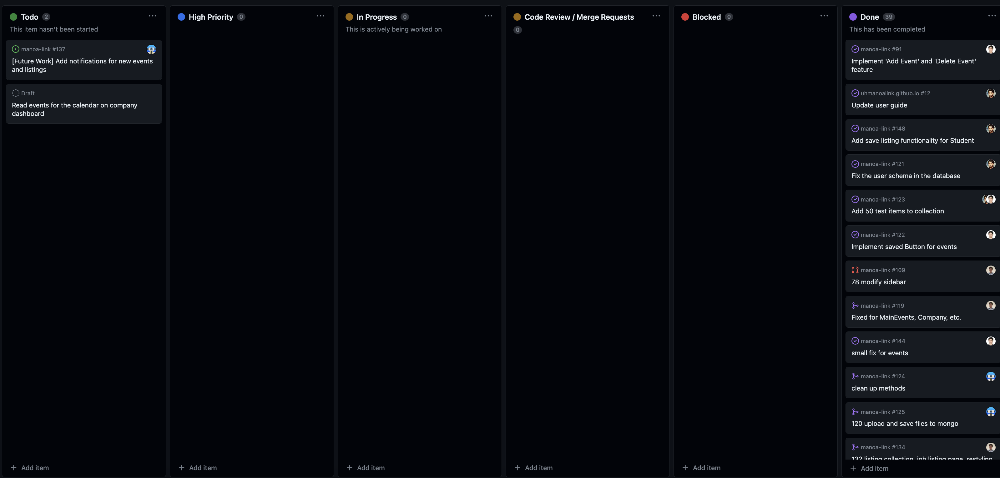
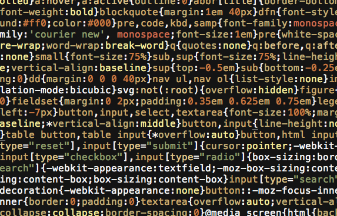
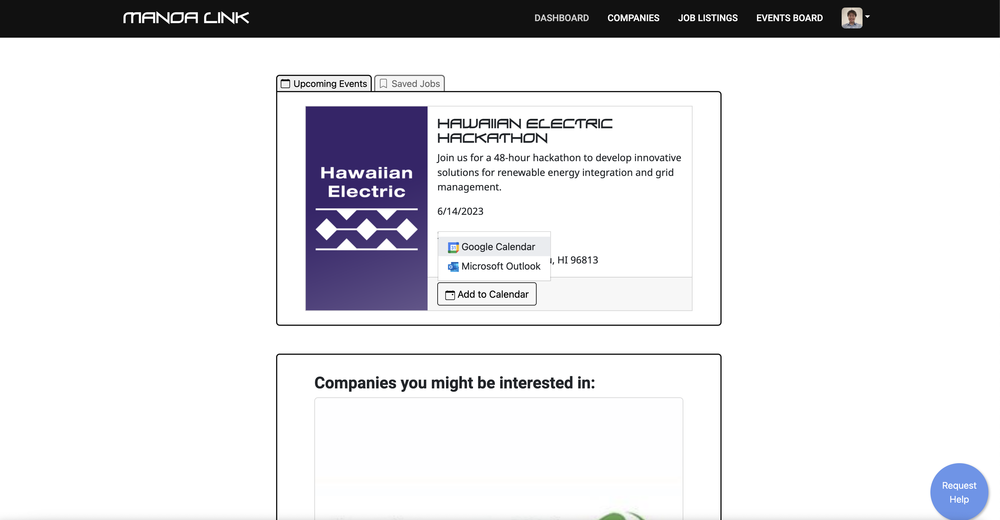

In this semester’s ICS 314, Software Engineering course, I’ve gained experience in numerous areas including practicing agile project management, enforcing coding standards, and using user interface frameworks. We’ve spent plenty of time practicing these skills for web development, and although it is a major component of software engineering, there are topics in software engineering that are outside of the scope of web development. Nonetheless, some of the practices we’ve used in web development carry over to other aspects of software engineering.
 Agile project management is about breaking down a large project into smaller chunks called “sprints,” with successive sprints building off the last. For our team, we practiced issue-driven development specifically, in which we set up project boards and listed a large number of “issues” to be taken care of, and their progress is made public. We used project boards that were available through GitHub This type of team management can be extrapolated towards other areas of software engineering. As examples, maintaining a mobile phone application and updating databases require many individual tasks to be taken care of in sequence, and there are plenty of options available on the internet similar to issue-driven development through GitHub. For instance, I used Jira and Atlassian in another web development team I was part of. In DevSecOps, it would be unsurprising to see separate project boards for each of development, security, and operations. In my part-time job, we use Trello and move tickets between columns. This practice is beneficial beyond just the scope of software engineering, too. Although I can imagine that other areas of academia do not require such strict organization, projects that are innately collaborative in industry can benefit from this as well.
 Yes, I’ve seen things. Terrible, terrible things. I take a look at someone’s code, and I see red and yellow squiggly lines all over. Instead of tabs, there are spaces between blocks of code. Coding standards, people. It can’t be emphasized enough, but we do not have enough coding standards in our lives. Earlier in the semester, I complained about how ESLint was incredibly picky, but it is somewhat necessary. But even beyond ESLint errors, there are numerous style errors that the machine simply cannot catch. For instance, you separate your “if” statements throughout the function rather than pushing them all into one block. To say that coding standards is only part of web development, or to even say that it is only part of software engineering, is a ridiculous statement. We must learn to practice coding standards regardless of what branch of computer science we enter. Even in academia, it is enforced in the early classes. Although it may not be enforced in a particular ICS 111 class at UH Manoa, it is typically enforced for even the beginning courses in a large number of universities. The reality is that, team-based web development is practically impossible without enforced coding standards, and it is reasonable to extrapolate that it is practically impossible without coding standards in any branch of software engineering. Many functions are reused or slightly modified in code, so it is absolutely necessary that a reader can understand your code, and as a result, can make the proper adjustments for their own purposes.
 Hackers and coders are cool and all, but really, the primary purpose of their jobs is for whatever software they are developing to be used by some sort of user. So where does the user fit in this picture? In this course, we gained familiarity with user-interface frameworks and design, which is absolutely essential in any context. What is the purpose of a computer without a user to prompt it, after all? For front-end design, we learned to use React, HTML, and CSS, while also using Meteor to connect the user inputs to databases in the back-end. Beyond just web development, many branches of computer science require an interface to speak to the user, or at the very least, a platform on which to display their research, discoveries, improvements, or whatever they seek. In software engineering, the entire purpose of software is to interact with the user, so it is absolutely necessary that we learned user-interface design. In general software engineering, an understanding of basic HTML, React, CSS, and principles is necessary, even if whatever software is being developed does not require any of these. Many of the principles and practices carry on, and truly, all programming languages within the same school of languages are basically the same - just written differently, and with different syntax.
These three practices aside, there is plenty more to software engineering, and one course is not enough to encompass all that there is to learn. One issue that I had with this course was that it did not cover anything to extreme depth, because there are many more topics in software engineering. However, this issue is not an error in the course structure - I actually really like the course structure - but in the fact that software engineering is far too broad. For the limited amount of time we were given this semester, the course was structured very well, and neatly taught us the basics. Overall, there are plenty more topics in software engineering than just the three listed above, and much more depth to what we have learned thus far.